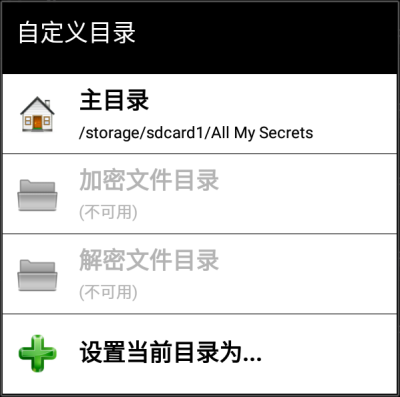

A - 可用的驱动器
- 指向当前设备上的可用卷+用户自定义的主目录/默认目录的快捷方式。
- 自定义目录 -

-
可以在此设置加密/解密文件输出目录（如已在“设置: 文件加密 → 加密/解密文件目标路径”中启用）

-
可以在此设置加密/解密文件输出目录（如已在“设置: 文件加密 → 加密/解密文件目标路径”中启用）
- SAF 按钮（Android 5+）
| 文件夹 | |
| 只读文件夹 | |
| 文件 | |
| 只读文件 | |
| 加密的文件 | |
| 只读加密文件 | |
| 返回父文件夹 |
android 4.4 external card read only（android 4.4 外部 卡 只读） Android/data/
com.paranoiaworks.unicus.android.sse